Settings: 390 CSS px
The phone header places documentation actions below the title and description.

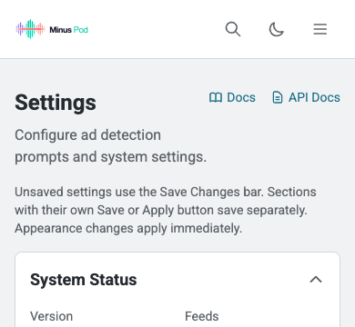

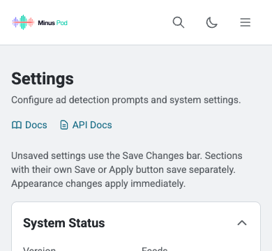
Settings: 1440 CSS px
The phone header places documentation actions below the title and description.

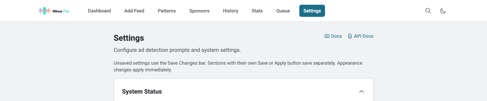

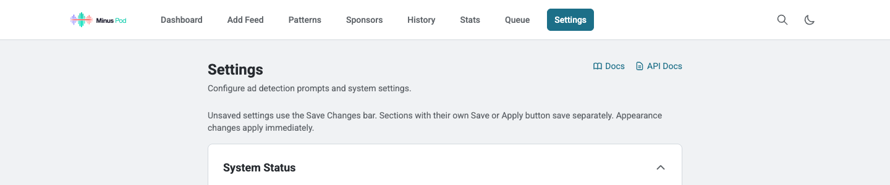
Sponsors: 390 CSS px
The existing editor uses shared input styles and associated labels and help.


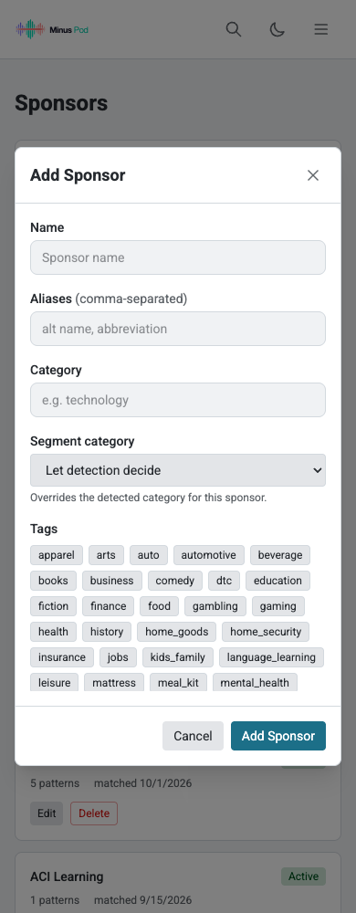
Sponsors: 1440 CSS px
The existing editor uses shared input styles and associated labels and help.

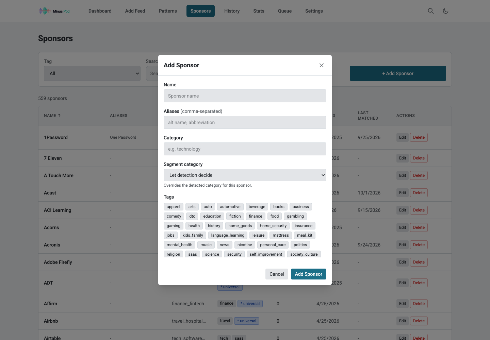

Stats: 390 CSS px
Averages and totals share 12 CSS px labels, 20 CSS px values, and 16 CSS px card padding.

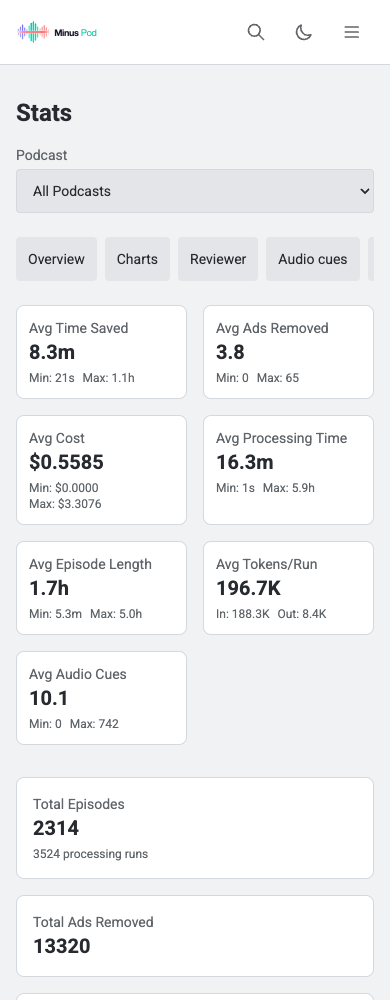

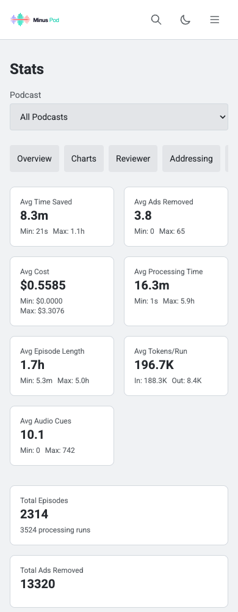
Stats: 1440 CSS px
Averages and totals share 12 CSS px labels, 20 CSS px values, and 16 CSS px card padding.

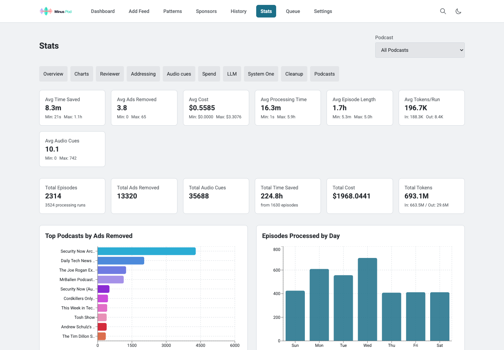

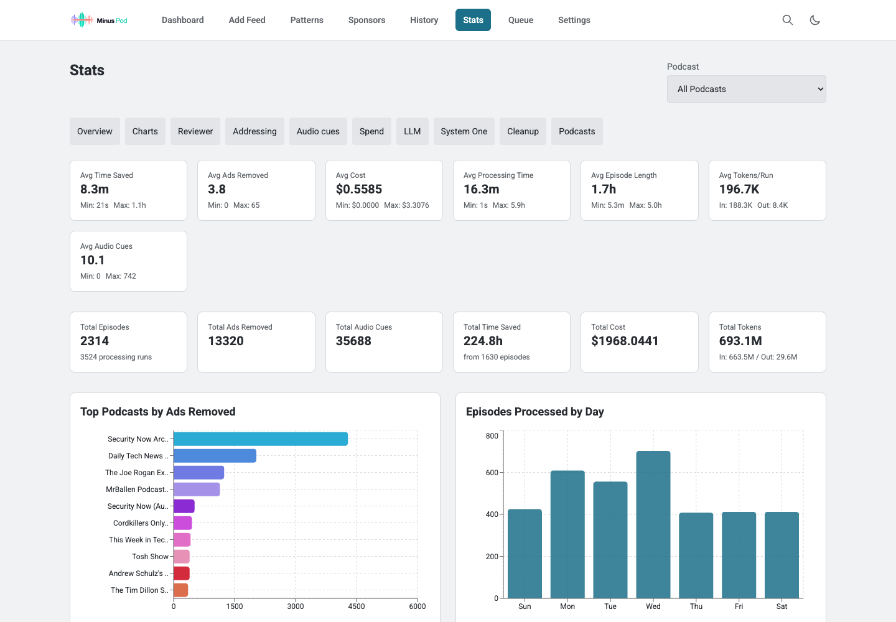
Active processing: 390 CSS px
A real recut reserves 45 CSS px for the collapsed status bar and 164 CSS px when expanded. The header starts below the bar in both states.

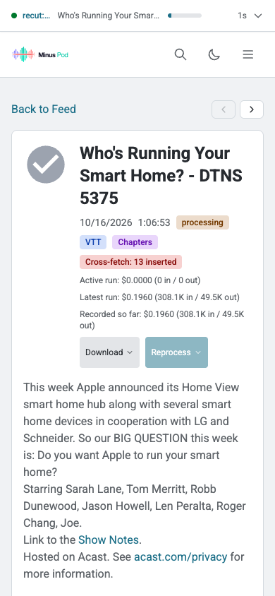

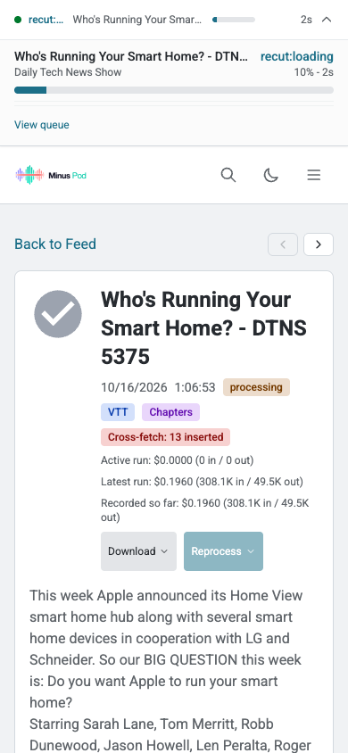